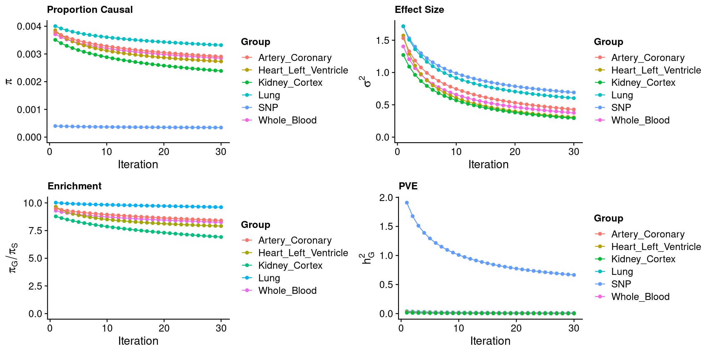
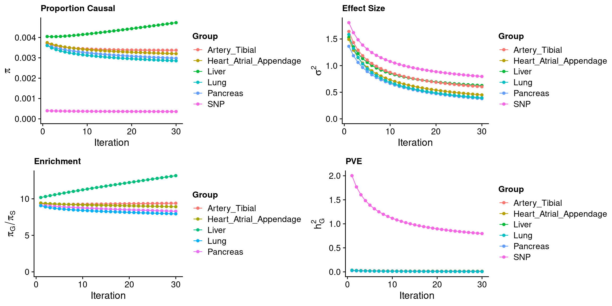
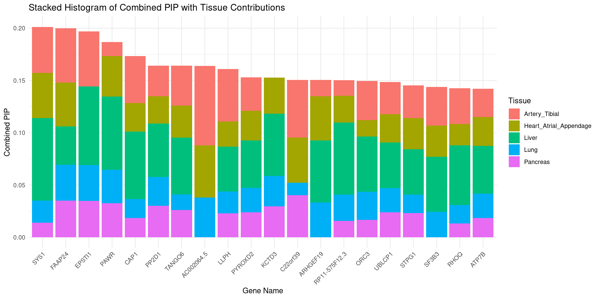
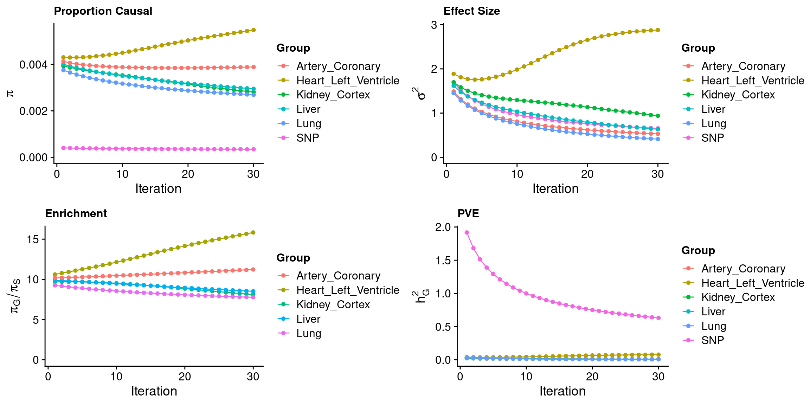
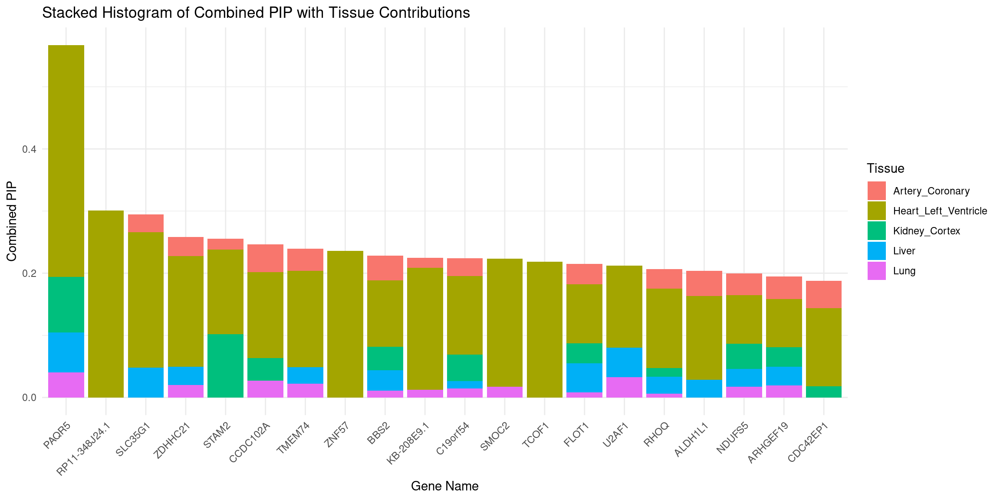
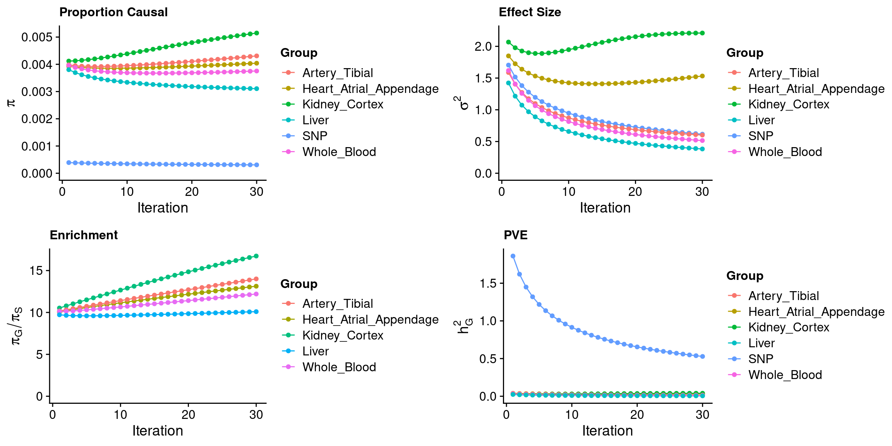
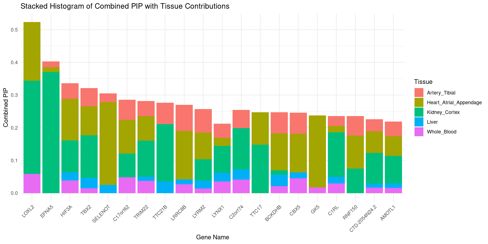

multi-tissue analysis (LD merge =T)
XSun
2023-12-13
Last updated: 2023-12-17
Checks: 6 1
Knit directory: ctwas_Tibetan/
This reproducible R Markdown analysis was created with workflowr (version 1.7.0). The Checks tab describes the reproducibility checks that were applied when the results were created. The Past versions tab lists the development history.
The R Markdown file has unstaged changes. To know which version of
the R Markdown file created these results, you’ll want to first commit
it to the Git repo. If you’re still working on the analysis, you can
ignore this warning. When you’re finished, you can run
wflow_publish to commit the R Markdown file and build the
HTML.
Great job! The global environment was empty. Objects defined in the global environment can affect the analysis in your R Markdown file in unknown ways. For reproduciblity it’s best to always run the code in an empty environment.
The command set.seed(20231213) was run prior to running
the code in the R Markdown file. Setting a seed ensures that any results
that rely on randomness, e.g. subsampling or permutations, are
reproducible.
Great job! Recording the operating system, R version, and package versions is critical for reproducibility.
Nice! There were no cached chunks for this analysis, so you can be confident that you successfully produced the results during this run.
Great job! Using relative paths to the files within your workflowr project makes it easier to run your code on other machines.
Great! You are using Git for version control. Tracking code development and connecting the code version to the results is critical for reproducibility.
The results in this page were generated with repository version 60ba183. See the Past versions tab to see a history of the changes made to the R Markdown and HTML files.
Note that you need to be careful to ensure that all relevant files for
the analysis have been committed to Git prior to generating the results
(you can use wflow_publish or
wflow_git_commit). workflowr only checks the R Markdown
file, but you know if there are other scripts or data files that it
depends on. Below is the status of the Git repository when the results
were generated:
Ignored files:
Ignored: ctwas_Tibetan/.Rhistory
Untracked files:
Untracked: .Rhistory
Untracked: factor_analysis/
Untracked: factor_analysis_DGN/
Untracked: factor_analysis_new/
Untracked: heart_atlas/
Untracked: heart_project/
Untracked: module_analysis/
Untracked: multigroup_ctwas_analysis/
Untracked: mutation_rate/
Untracked: pathway_analysis/
Untracked: proteome_alzheimer/
Unstaged changes:
Modified: ctwas_Tibetan/analysis/multi_tissue.Rmd
Note that any generated files, e.g. HTML, png, CSS, etc., are not included in this status report because it is ok for generated content to have uncommitted changes.
These are the previous versions of the repository in which changes were
made to the R Markdown
(ctwas_Tibetan/analysis/multi_tissue.Rmd) and HTML
(ctwas_Tibetan/docs/multi_tissue.html) files. If you’ve
configured a remote Git repository (see ?wflow_git_remote),
click on the hyperlinks in the table below to view the files as they
were in that past version.
| File | Version | Author | Date | Message |
|---|---|---|---|---|
| Rmd | 60ba183 | XSun | 2023-12-14 | update |
For each trait, we sorted the tissues by PVE explained by genes, then the top5 un-correlated tissues were selected for the multi-tissue analysis.
Data
Traits and selected tissues
| Trait | Tissue | PVE_gene |
|---|---|---|
| LB | Lung | 0.0410350101026084 |
| Whole_Blood | 0.0110875627240866 | |
| Heart_Left_Ventricle | 0.0107697033082494 | |
| Artery_Coronary | 0.00930578096193273 | |
| Kidney_Cortex | 0.00426258259876705 | |
| MC | Liver | 0.0178648723821638 |
| Artery_Tibial | 0.0134706822007496 | |
| Heart_Atrial_Appendage | 0.0100733429644444 | |
| Pancreas | 0.00867082220578753 | |
| Lung | 0.0085924869917463 | |
| OxHb | Heart_Left_Ventricle | 0.0633139032762666 |
| Kidney_Cortex | 0.0397523122784917 | |
| Liver | 0.0231916966396772 | |
| Artery_Coronary | 0.0135241915935851 | |
| Lung | 0.0104129270975456 | |
| Pulse | Heart_Atrial_Appendage | 0.0492054125707622 |
| Kidney_Cortex | 0.0402428509363196 | |
| Artery_Tibial | 0.0173924354650824 | |
| Whole_Blood | 0.0148621621982472 | |
| Liver | 0.00959987160023217 |
Functions used
suppressMessages(library(ctwas))
suppressMessages(library(data.table))
suppressMessages(library(RSQLite))
suppressMessages(library(DT))
suppressMessages(library(tools))
suppressMessages(library(dplyr))
suppressMessages(library(tidyr))
thin <- 0.1
process_data <- function(weight, outputdir, outname, z_snp, z_gene, display_datatable = TRUE) {
# Splitting and constructing weight file paths
weight <- unlist(strsplit(weight, split=","))
weight <- paste0("/project2/xinhe/shared_data/multigroup_ctwas/weights/mashr_models/mashr_", weight, ".db")
# Reading cTWAS results
ctwas_res <- fread(paste0(outputdir, outname, ".susieIrss.txt"))
# Initialize gene_info dataframe
gene_info <- data.frame(gene=character(), genename=character(), gene_type=character(), weight=character())
for (i in seq_along(weight)) {
sqlite <- dbDriver("SQLite")
db <- dbConnect(sqlite, weight[i])
query <- function(...) dbGetQuery(db, ...)
gene_info_current <- query("SELECT gene, genename, gene_type FROM extra")
dbDisconnect(db)
gene_info_current$weight <- weight[i]
gene_info <- rbind(gene_info, gene_info_current)
}
# Processing gene_info
gene_info$weight <- sapply(gene_info$weight, function(x) rev(unlist(strsplit(file_path_sans_ext(x), "/")))[1])
gene_info$id <- paste(gene_info$gene, gene_info$weight, sep="|")
# Adding gene names to cTWAS results
ctwas_res$genename[ctwas_res$type != "SNP"] <- gene_info$genename[match(ctwas_res$id[ctwas_res$type != "SNP"], gene_info$id)]
# Adding z values
ctwas_res$z[ctwas_res$type == "SNP"] <- z_snp$z[match(ctwas_res$id[ctwas_res$type == "SNP"], z_snp$id)]
ctwas_res$z[ctwas_res$type != "SNP"] <- z_gene$z[match(ctwas_res$id[ctwas_res$type != "SNP"], z_gene$id)]
# Sorting and displaying datatable if required
ctwas_res <- ctwas_res[order(-ctwas_res$susie_pip),]
if (display_datatable) {
datatable(ctwas_res[ctwas_res$type != "SNP" & ctwas_res$susie_pip > 0.8,])
}
return(ctwas_res)
}
process_gene_data <- function(ctwas_res, weight = NULL) {
# Aggregate susie_pip
df_gene <- aggregate(ctwas_res$susie_pip[ctwas_res$type != "SNP"],
by = list(ctwas_res$genename[ctwas_res$type != "SNP"]),
FUN = sum)
colnames(df_gene) <- c("genename", "combined_pip")
# Optional part for dropping duplicated gene names
# Uncomment this part if needed
# df_gene <- df_gene[!(df_gene$genename %in% names(which(table(ctwas_res$genename) > length(weight)))),]
# Collect tissue-level results
all_tissue_names <- unique(ctwas_res$type[ctwas_res$type != "SNP"])
df_gene_pips <- matrix(NA, nrow = nrow(df_gene), ncol = length(all_tissue_names))
colnames(df_gene_pips) <- all_tissue_names
ctwas_gene_res <- ctwas_res[ctwas_res$type != "SNP",]
for (i in 1:nrow(df_gene)) {
gene <- df_gene$genename[i]
ctwas_gene_res_subset <- ctwas_gene_res[ctwas_gene_res$genename == gene,]
df_gene_pips[i, ctwas_gene_res_subset$type] <- ctwas_gene_res_subset$susie_pip
}
df_gene <- cbind(df_gene, df_gene_pips)
# Sort by combined PIP
df_gene <- df_gene[order(-df_gene$combined_pip),]
df_gene <- df_gene[, apply(df_gene, 2, function(x) {!all(is.na(x))})] # Drop genes not imputed in any tissue
# Determine number of rows to display
n_rows <- max(sum(df_gene$combined_pip > 0.8), 20)
# Select top rows based on the criteria
df_to_display <- head(df_gene, n_rows)
# Return a datatable
# return(DT::datatable(df_to_display,caption = htmltools::tags$caption( style = 'caption-side: left; text-align: left; color:black; font-size:150% ;','Genes with combined pip > 0.8, 0 means pip=0; NA means no such gene in this tissue'),options = list(pageLength = 10) ))
datatable_display <- DT::datatable(df_to_display,
caption = htmltools::tags$caption(style = 'caption-side: left; text-align: left; color:black; font-size:150%;',
'Genes with combined pip > 0.8, 0 means pip=0; NA means no such gene in this tissue'),
options = list(pageLength = 10))
return(df_to_display)
}
process_ctwas_results <- function(ctwas_parameters, ctwas_res) {
# Process parameters
para <- cbind(ctwas_parameters$group_size,
ctwas_parameters$group_prior,
ctwas_parameters$group_prior_var,
c(NA, ctwas_parameters$enrichment),
ctwas_parameters$group_pve)
para <- as.data.frame(cbind(rownames(para), para))
colnames(para) <- c("group","group_size","group_prior","group_prior_var","enrichment","group_pve")
# Filter ctwas results for genes and high PIP
ctwas_res_gene <- ctwas_res[ctwas_res$type != "SNP",]
max_susie_pip_by_type <- ctwas_res_gene %>%
group_by(type) %>%
summarize(max_susie_pip = max(susie_pip, na.rm = TRUE))
# Merge summary with parameters
summary <- merge(max_susie_pip_by_type, para, by.x = "type", by.y = "group", all.y = TRUE)
return(summary)
}
attributable_pip <- function(df, combined_pip_col) {
# Identify the relevant columns (those ending with '_nolnc')
#relevant_cols <- names(df)[grepl("_nolnc$", names(df))]
relevant_cols <- names(df)[!names(df) %in%c( "combined_pip","genename")]
# Create and rearrange columns dynamically
df <- df %>%
mutate(across(all_of(relevant_cols),
~ ifelse(!is.na(.x) & !is.na(combined_pip),
.x / combined_pip * 100, NA),
.names = "{.col}_Attributable_PIP (%)"))%>%
{
# Building the new column order
new_order <- unlist(lapply(relevant_cols, function(col) {
c(col, paste0(col, "_Attributable_PIP (%)"))
}))
select(., all_of(c("genename", combined_pip_col, new_order)))
}
}
plot_stacked_histogram <- function(df, genename_col, combined_pip_col, attributable_cols) {
df[[genename_col]] <- factor(df[[genename_col]], levels = df[[genename_col]])
long_df_attributable <- df %>%
select(all_of(c(genename_col, combined_pip_col, attributable_cols))) %>%
pivot_longer(
cols = all_of(attributable_cols),
names_to = "Tissue",
values_to = "Proportion"
) %>%
mutate(Tissue = gsub("_Attributable_PIP \\(%\\)", "", Tissue)) # Modify Tissue names
# Calculate the absolute values for each segment
long_df_attributable <- long_df_attributable %>%
mutate(Absolute_Value = Proportion / 100 * long_df_attributable[[combined_pip_col]])
# Create the plot
p <- ggplot(long_df_attributable, aes_string(x = genename_col, y = "Absolute_Value", fill = "Tissue")) +
geom_bar(stat = "identity") +
theme_minimal() +
labs(title = "Stacked Histogram of Combined PIP with Tissue Contributions",
x = "Gene Name",
y = "Combined PIP",
fill = "Tissue") +
theme(axis.text.x = element_text(angle = 45, hjust = 1))
return(p)
}LB
outputdir <- "/project/xinhe/xsun/ctwas/2.TIBETN/output/multi/LB/"
outname <- "LB_ctwas"
gwas_n <- 966
weight <- "Lung,Whole_Blood,Heart_Left_Ventricle,Artery_Coronary,Kidney_Cortex"
load(paste0(outputdir,outname,"_z_snp.Rd"))
load(paste0(outputdir,outname,"_z_gene.Rd"))
ctwas_parameters <- ctwas:::ctwas_summarize_parameters(outputdir = outputdir,
outname = outname,
gwas_n = gwas_n,
thin = thin)
ctwas_parameters$convergence_plot
ctwas_res <- process_data(weight = weight,outputdir = outputdir,outname = outname,z_snp = z_snp,z_gene = z_gene)
para <- process_ctwas_results(ctwas_parameters = ctwas_parameters,ctwas_res = ctwas_res)
DT::datatable(para,caption = htmltools::tags$caption( style = 'caption-side: left; text-align: left; color:black; font-size:150% ;','Parameters'))df_gene <- process_gene_data(ctwas_res = ctwas_res)
df_gene <- attributable_pip(df_gene,combined_pip_col = "combined_pip")
DT::datatable(df_gene,caption = htmltools::tags$caption( style = 'caption-side: left; text-align: left; color:black; font-size:150% ;','top20 Genes sorted bu susiepip, 0 means pip=0; NA means no such gene in this tissue'),options = list(pageLength = 10) )attributable_columns <- colnames(df_gene)[seq(4,12,by=2)]
plot_stacked_histogram(df_gene, "genename", "combined_pip", attributable_columns)
table_show <- ctwas_res[ctwas_res$genename %in% df_gene$genename,]
table_show <- rbind(table_show,ctwas_res[ctwas_res$type!="SNP" & ctwas_res$susie_pip > 0.8,])
table_show <- table_show[!duplicated(table_show$id),]
DT::datatable(table_show,caption = htmltools::tags$caption( style = 'caption-side: left; text-align: left; color:black; font-size:150% ;','Detailed table for genes showed above'),options = list(pageLength = 5))MC
outputdir <- "/project/xinhe/xsun/ctwas/2.TIBETN/output/multi/MC/"
outname <- "MC_ctwas"
gwas_n <- 966
weight <- "Liver,Artery_Tibial,Heart_Atrial_Appendage,Pancreas,Lung"
load(paste0(outputdir,outname,"_z_snp.Rd"))
load(paste0(outputdir,outname,"_z_gene.Rd"))
ctwas_parameters <- ctwas:::ctwas_summarize_parameters(outputdir = outputdir,
outname = outname,
gwas_n = gwas_n,
thin = thin)
ctwas_parameters$convergence_plot
ctwas_res <- process_data(weight = weight,outputdir = outputdir,outname = outname,z_snp = z_snp,z_gene = z_gene)
para <- process_ctwas_results(ctwas_parameters = ctwas_parameters,ctwas_res = ctwas_res)
DT::datatable(para,caption = htmltools::tags$caption( style = 'caption-side: left; text-align: left; color:black; font-size:150% ;','Parameters'))df_gene <- process_gene_data(ctwas_res = ctwas_res)
df_gene <- attributable_pip(df_gene,combined_pip_col = "combined_pip")
DT::datatable(df_gene,caption = htmltools::tags$caption( style = 'caption-side: left; text-align: left; color:black; font-size:150% ;','top20 Genes sorted bu susiepip, 0 means pip=0; NA means no such gene in this tissue'),options = list(pageLength = 10) )attributable_columns <- colnames(df_gene)[seq(4,12,by=2)]
plot_stacked_histogram(df_gene, "genename", "combined_pip", attributable_columns)
table_show <- ctwas_res[ctwas_res$genename %in% df_gene$genename,]
table_show <- rbind(table_show,ctwas_res[ctwas_res$type!="SNP" & ctwas_res$susie_pip > 0.8,])
table_show <- table_show[!duplicated(table_show$id),]
DT::datatable(table_show,caption = htmltools::tags$caption( style = 'caption-side: left; text-align: left; color:black; font-size:150% ;','Detailed table for genes showed above'),options = list(pageLength = 5))OxHb
outputdir <- "/project/xinhe/xsun/ctwas/2.TIBETN/output/multi/OxHb/"
outname <- "OxHb_ctwas"
gwas_n <- 966
weight <- "Heart_Left_Ventricle,Kidney_Cortex,Liver,Artery_Coronary,Lung"
load(paste0(outputdir,outname,"_z_snp.Rd"))
load(paste0(outputdir,outname,"_z_gene.Rd"))
ctwas_parameters <- ctwas:::ctwas_summarize_parameters(outputdir = outputdir,
outname = outname,
gwas_n = gwas_n,
thin = thin)
ctwas_parameters$convergence_plot
ctwas_res <- process_data(weight = weight,outputdir = outputdir,outname = outname,z_snp = z_snp,z_gene = z_gene)
para <- process_ctwas_results(ctwas_parameters = ctwas_parameters,ctwas_res = ctwas_res)
DT::datatable(para,caption = htmltools::tags$caption( style = 'caption-side: left; text-align: left; color:black; font-size:150% ;','Parameters'))df_gene <- process_gene_data(ctwas_res = ctwas_res)
df_gene <- attributable_pip(df_gene,combined_pip_col = "combined_pip")
DT::datatable(df_gene,caption = htmltools::tags$caption( style = 'caption-side: left; text-align: left; color:black; font-size:150% ;','top20 Genes sorted bu susiepip, 0 means pip=0; NA means no such gene in this tissue'),options = list(pageLength = 10) )attributable_columns <- colnames(df_gene)[seq(4,12,by=2)]
plot_stacked_histogram(df_gene, "genename", "combined_pip", attributable_columns)
table_show <- ctwas_res[ctwas_res$genename %in% df_gene$genename,]
table_show <- rbind(table_show,ctwas_res[ctwas_res$type!="SNP" & ctwas_res$susie_pip > 0.8,])
table_show <- table_show[!duplicated(table_show$id),]
DT::datatable(table_show,caption = htmltools::tags$caption( style = 'caption-side: left; text-align: left; color:black; font-size:150% ;','Detailed table for genes showed above'),options = list(pageLength = 5))Pulse
outputdir <- "/project/xinhe/xsun/ctwas/2.TIBETN/output/multi/Pulse/"
outname <- "Pulse_ctwas"
gwas_n <- 966
weight <- "Heart_Atrial_Appendage,Kidney_Cortex,Artery_Tibial,Whole_Blood,Liver"
load(paste0(outputdir,outname,"_z_snp.Rd"))
load(paste0(outputdir,outname,"_z_gene.Rd"))
ctwas_parameters <- ctwas:::ctwas_summarize_parameters(outputdir = outputdir,
outname = outname,
gwas_n = gwas_n,
thin = thin)
ctwas_parameters$convergence_plot
ctwas_res <- process_data(weight = weight,outputdir = outputdir,outname = outname,z_snp = z_snp,z_gene = z_gene)
para <- process_ctwas_results(ctwas_parameters = ctwas_parameters,ctwas_res = ctwas_res)
DT::datatable(para,caption = htmltools::tags$caption( style = 'caption-side: left; text-align: left; color:black; font-size:150% ;','Parameters'))df_gene <- process_gene_data(ctwas_res = ctwas_res)
df_gene <- attributable_pip(df_gene,combined_pip_col = "combined_pip")
DT::datatable(df_gene,caption = htmltools::tags$caption( style = 'caption-side: left; text-align: left; color:black; font-size:150% ;','top20 Genes sorted bu susiepip, 0 means pip=0; NA means no such gene in this tissue'),options = list(pageLength = 10) )attributable_columns <- colnames(df_gene)[seq(4,12,by=2)]
plot_stacked_histogram(df_gene, "genename", "combined_pip", attributable_columns)
table_show <- ctwas_res[ctwas_res$genename %in% df_gene$genename,]
table_show <- rbind(table_show,ctwas_res[ctwas_res$type!="SNP" & ctwas_res$susie_pip > 0.8,])
table_show <- table_show[!duplicated(table_show$id),]
DT::datatable(table_show,caption = htmltools::tags$caption( style = 'caption-side: left; text-align: left; color:black; font-size:150% ;','Detailed table for genes showed above'),options = list(pageLength = 5))
sessionInfo()R version 4.2.0 (2022-04-22)
Platform: x86_64-pc-linux-gnu (64-bit)
Running under: CentOS Linux 7 (Core)
Matrix products: default
BLAS/LAPACK: /software/openblas-0.3.13-el7-x86_64/lib/libopenblas_haswellp-r0.3.13.so
locale:
[1] C
attached base packages:
[1] tools stats graphics grDevices utils datasets methods
[8] base
other attached packages:
[1] cowplot_1.1.1 ggplot2_3.3.5 tidyr_1.3.0 dplyr_1.1.4
[5] DT_0.22 RSQLite_2.3.1 data.table_1.14.2 ctwas_0.1.40
loaded via a namespace (and not attached):
[1] Rcpp_1.0.8.3 lattice_0.20-45 rprojroot_2.0.3 digest_0.6.29
[5] foreach_1.5.2 utf8_1.2.2 R6_2.5.1 evaluate_0.15
[9] highr_0.9 pillar_1.9.0 rlang_1.1.2 rstudioapi_0.13
[13] whisker_0.4 jquerylib_0.1.4 blob_1.2.3 Matrix_1.5-3
[17] rmarkdown_2.14 labeling_0.4.2 stringr_1.5.1 htmlwidgets_1.5.4
[21] bit_4.0.4 munsell_0.5.0 compiler_4.2.0 httpuv_1.6.5
[25] xfun_0.30 pkgconfig_2.0.3 htmltools_0.5.2 tidyselect_1.2.0
[29] tibble_3.2.1 workflowr_1.7.0 logging_0.10-108 codetools_0.2-18
[33] fansi_1.0.3 withr_2.5.0 later_1.3.0 grid_4.2.0
[37] jsonlite_1.8.0 gtable_0.3.0 lifecycle_1.0.4 DBI_1.1.2
[41] git2r_0.30.1 magrittr_2.0.3 scales_1.2.0 cli_3.6.1
[45] stringi_1.7.6 cachem_1.0.6 farver_2.1.0 fs_1.5.2
[49] promises_1.2.0.1 pgenlibr_0.3.3 bslib_0.3.1 generics_0.1.2
[53] vctrs_0.6.5 iterators_1.0.14 bit64_4.0.5 glue_1.6.2
[57] purrr_1.0.2 crosstalk_1.2.0 fastmap_1.1.0 yaml_2.3.5
[61] colorspace_2.0-3 memoise_2.0.1 knitr_1.39 sass_0.4.1